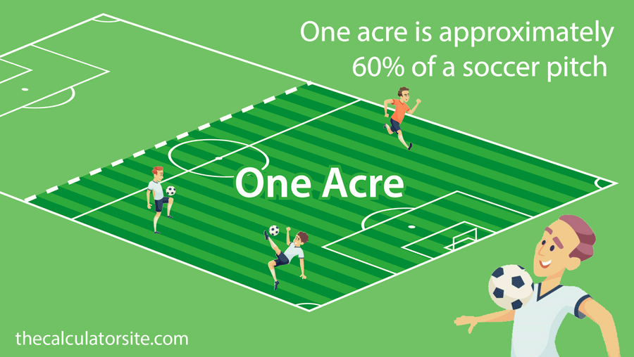

Cell towers broadcast signal in every direction equally, so their coverage area is a circle. Engineers calculate the area of that circle to figure out how many towers are needed to cover a city without gaps or wasted overlap.
Land districts, fields, and building lots are mapped as polygons. Calculating their area down to the square foot lets planners divide land fairly, set property taxes, and decide how many homes or crops can fit on a parcel.
